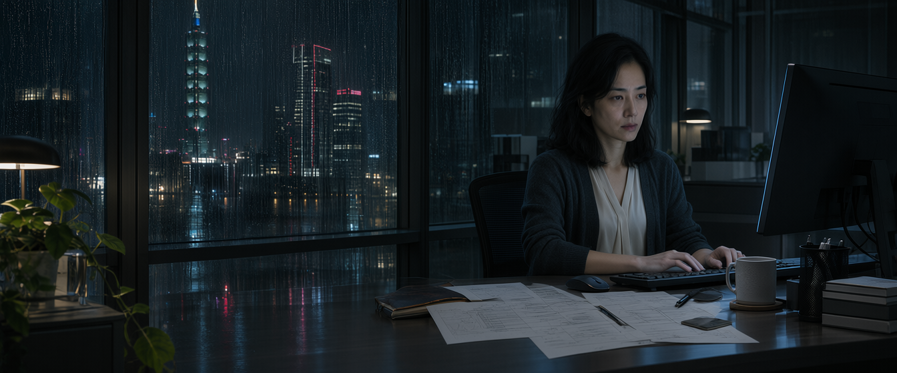
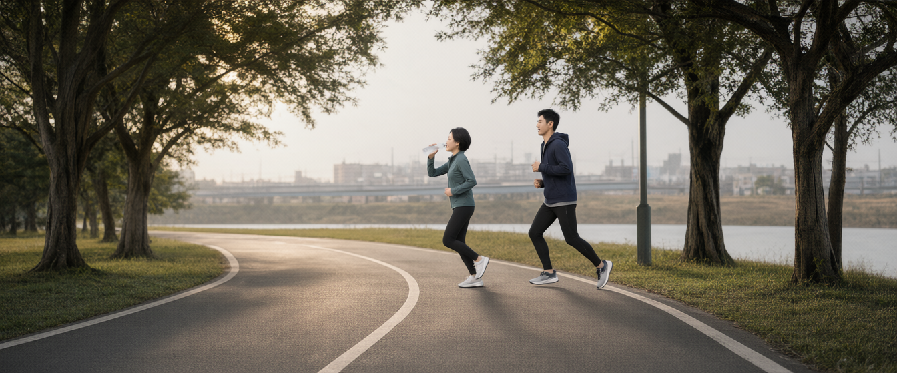
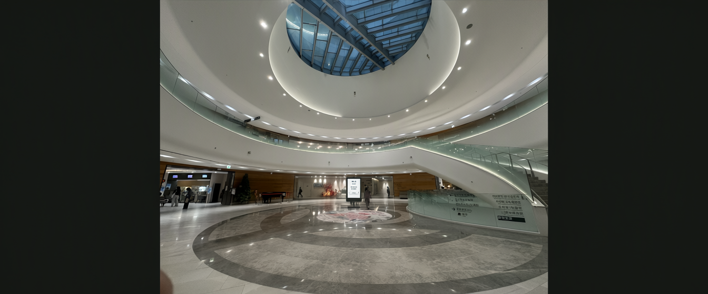
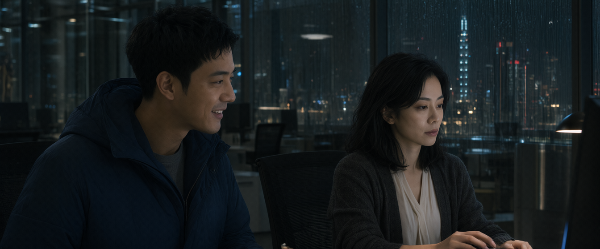
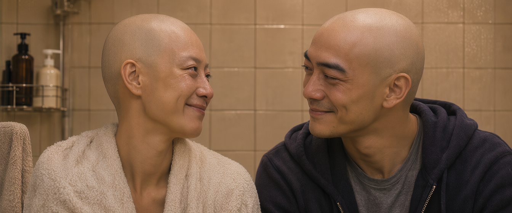
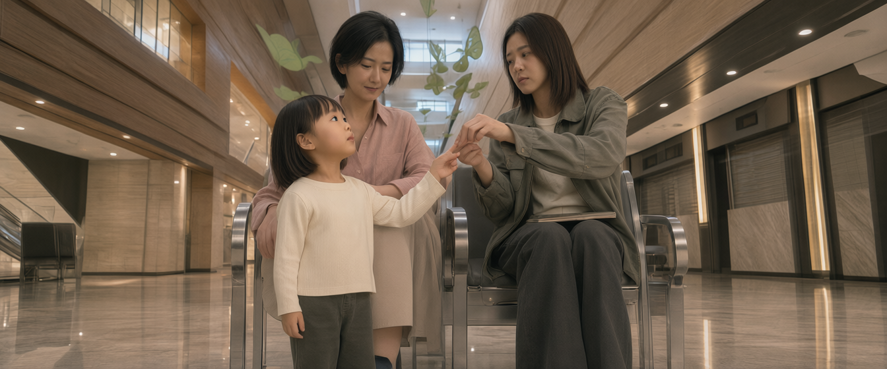

轉場與約定鏡頭試稿
S04 雨夜辦公室
先留約一秒雨聲，再進辦公桌。

生圖提示詞
窗邊空鏡。只見雨滴沿辦公室窗玻璃滑落，窗外臺北夜色，桌角一點暖燈。人與倒影都在畫外。S37 河濱清晨
在跑者出場前留一個呼吸。

生圖提示詞
臺北河濱步道無人遠景，晨光從樹間落在彎道上，河面在遠處；平視，固定鏡位。S45c 希望光塔
「六年後」字卡之後，先交代一家人回到哪裡。

生圖提示詞
只拍參考圖裡既有的醫院中庭建築與希望光塔。保持樑柱、地面和光塔的相對位置，空景、無人、自然天光，不新增院名招牌。S07 第一次約定
把「打勾勾？」留在聲音裡，切到她抬眼回應。

生圖提示詞
沿用辦公室和兩位演員。從側面拍兩人肩膀以上的雙人中近景，阿澤開玩笑，詠晴眼睛從月曆抬起來看他，嘴角微笑。手在畫框下方。S35 化療前的約定
讓「好，我去接妳」後的眼神承接約定。

生圖提示詞
沿用參考圖的剃髮狀態、衣著與浴室光線。詠晴與阿澤平視雙人近景，說好了之後兩人相視，肩膀輕輕放鬆，手在畫外。S51 小禾的小指
保留小指的呼應，在接觸前切到女孩的反應。

生圖提示詞
同側候診灰椅，平視中近景：小禾側身面向坐著的女孩，小禾只有一隻手自然伸出小指，其餘手指放鬆，手腕和前臂完整相連。女孩視線落向孩子，雙手放在畫外。捕捉尚未碰觸的一瞬間。